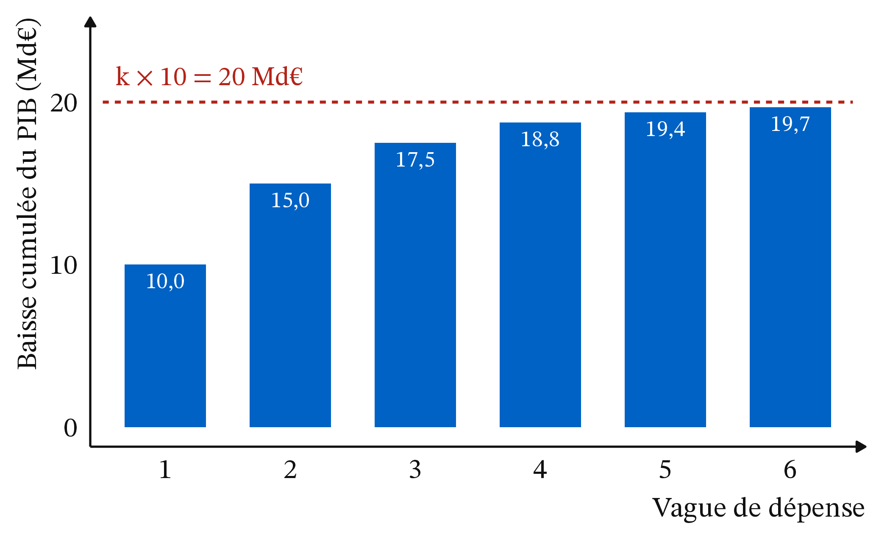
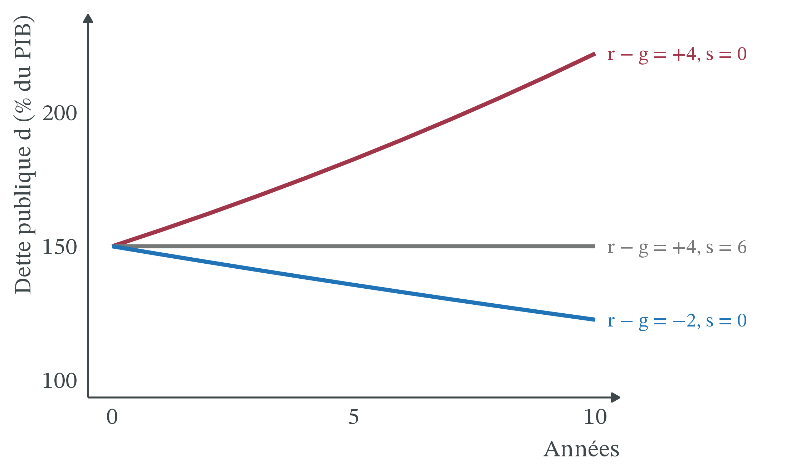
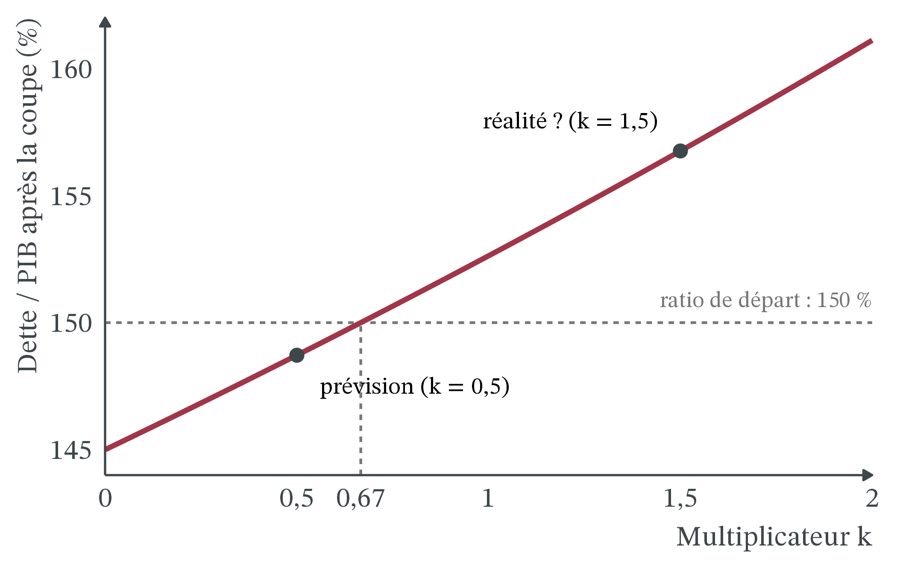

La Grèce, 2010-2015 : l’austérité a-t-elle marché ?
CM 8 · Partie II · La monnaie, l’État, le monde
Multiplicateur budgétaire, dynamique de la dette, chômage.
- PIB en volume, PIB en valeur : le PIB en valeur est mesuré en euros courants ; le PIB en volume (ou PIB réel) retire l’effet des prix, pour suivre les quantités produites.
- Solde public, solde primaire : le solde public est l’écart entre les recettes et les dépenses des administrations publiques (négatif = déficit) ; le solde primaire est le même solde sans les intérêts de la dette.
- Dette publique : un stock, la somme de ce que les administrations doivent ; on la rapporte au PIB, un flux annuel.
- Propension marginale à consommer (c) : part d’un euro de revenu supplémentaire qui est consommée. Avec c = 0,8, un ménage qui gagne 100 € de plus en dépense 80.
- Taux d’intérêt réel : r ≈ i − π, le taux nominal moins l’inflation (CM 7).
- Analyse positive et analyse normative : ce qui est (vérifiable) et ce qui devrait être (jugement de valeur).
1 La question
En octobre 2009, le gouvernement grec révise fortement ses chiffres de déficit public (Commission européenne, rapport sur les statistiques grecques du déficit et de la dette, 08/01/2010) ; en février 2010, il reconnaît que ses comptes publics avaient été mal déclarés. En mars, le coût de ses emprunts devient « insoutenable » (notre traduction) ; en mai 2010, les pays de la zone euro et le FMI lui accordent un premier plan d’aide (source : Mécanisme européen de stabilité, MES, page « Greece », consultée le 21/10/2026). Le déficit public de 2009 est aujourd’hui estimé à 15,4 % du PIB (Eurostat, série téléchargée le 21/10/2026). Deux autres plans suivent, en 2012 puis en 2015 ; la Grèce en sort le 20 août 2018 (La finance pour tous, 20/08/2018). Au total, environ 289 Md€ de prêts (MES ; la DG Trésor arrondit à 290 Md€, 03/11/2025). En échange, l’État grec baisse ses dépenses et augmente ses impôts : c’est l’austérité.
Le résultat déroute (Figure 4). De 2008 à 2013, le PIB réel recule de 27 %. Le chômage passe de 9,8 % des actifs en 2009 à 27,8 % en 2013, contre 12,2 % dans la zone euro. Et la dette, que l’austérité devait réduire, passe de 147,8 % du PIB en 2010 à 180,4 % en 2013, puis 189,0 % en 2018 (Eurostat, séries téléchargées le 21/10/2026). Après un pic de 209,4 % en 2020 (crise sanitaire), elle redescend vite : 145,4 % en 2025.
La question de la séance : l’austérité a-t-elle marché ? Pour quoi faire : alléger le poids de la dette, retrouver la croissance, regagner la confiance des prêteurs ? On construit trois outils simples : le multiplicateur, l’effet boule de neige de la dette et une règle qui les relie.
2 Apports théoriques
2.1 Une baisse de la dépense publique fait baisser le PIB, parfois de plus que son montant
1929 · auteur inconnu (archives Bettmann), domaine public, Wikimedia Commons
John Maynard Keynes (1936), The General Theory of Employment, Interest and Money, Londres, Macmillan · école keynésienne. Quand des capacités de production restent inutilisées, c’est la demande qui fixe la production. Une baisse de dépense réduit des revenus, donc d’autres dépenses : son effet sur le PIB est multiplié.
Définition 1 (Austérité (ou consolidation budgétaire)) Politique qui réduit le déficit public en baissant les dépenses publiques, en augmentant les impôts, ou les deux. On la mesure par l’amélioration du solde public hors effet de la conjoncture, en points de PIB : une récession creuse le déficit d’elle-même, sans que la politique change.
Définition 2 (Multiplicateur budgétaire) Le multiplicateur (k) mesure la variation du PIB provoquée par une variation de la dépense publique : ΔPIB = k × Δ(dépense publique). Dans le cas le plus simple, il ne dépend que de la propension marginale à consommer : k = 1 / (1 − c). Avec c = 0,5, k = 2 ; avec c = 0,8, k = 5. À ne pas confondre avec le multiplicateur de crédit du CM 6, qui relie la monnaie de banque centrale à la masse monétaire.
Ce multiplicateur simple est un maximum. En réalité, une partie de chaque euro de revenu part en impôts, en épargne ou en importations, et la banque centrale peut baisser ses taux pour soutenir l’activité. Les multiplicateurs estimés sont donc bien plus petits : proches de 0,5 en temps normal, d’après les études citées par Blanchard et Leigh (2013).
2.2 En 2010, les prévisions ont sous-estimé le multiplicateur
2008 · Eugene Salazar (FMI), domaine public, Wikimedia Commons
Olivier Blanchard et Daniel Leigh (2013), « Growth Forecast Errors and Fiscal Multipliers », American Economic Review, 103(3), 117-120 · macroéconomie appliquée (FMI). Dans les pays européens, plus un pays prévoyait une austérité forte en 2010, plus sa croissance a été inférieure aux prévisions. L’explication la plus simple : les multiplicateurs étaient bien plus élevés que ceux que les prévisionnistes supposaient.
Leur méthode est simple. Au printemps 2010, le FMI publie, pour 26 pays européens, une prévision de croissance et une prévision d’austérité. On compare ensuite la croissance réalisée en 2010 et 2011 à la croissance prévue. Résultat : pour chaque point de PIB d’austérité prévue en plus, le PIB a été inférieur d’environ 1 % à la prévision (Blanchard et Leigh, NBER Working Paper n° 18779, février 2013). Si les prévisions supposaient un multiplicateur d’environ 0,5, comme les auteurs le pensent, le vrai multiplicateur était de l’ordre de 1,5 : « nettement supérieur à 1 » (notre traduction) au début de la crise.
Pourquoi si élevé ? Trois raisons, avancées dès 2010 : les taux d’intérêt, déjà au plancher, ne pouvaient plus baisser pour compenser ; le crédit fonctionnait mal, si bien que ménages et entreprises dépensaient selon leur revenu du moment ; l’économie avait beaucoup de capacités inutilisées. Membre de la zone euro, la Grèce ne pouvait pas non plus dévaluer sa monnaie.
2.3 La dette fait boule de neige quand le taux d’intérêt dépasse la croissance
Evsey Domar (1944), « The “Burden of the Debt” and the National Income », American Economic Review, 34(4), 798-827 · keynésien de la croissance. Ce qui compte n’est pas le montant de la dette, mais son poids dans le revenu national. Ce poids se stabilise si le revenu national croît régulièrement, à un niveau d’autant plus bas que la croissance est forte.
Dans le ratio d = dette / PIB, les intérêts font grossir le numérateur au rythme r, la croissance fait grossir le dénominateur au rythme g. Si r dépasse g, la dette grossit plus vite que le PIB, même sans nouveau déficit.
Définition 3 (Effet boule de neige) Variation du ratio d due au seul écart entre le taux d’intérêt et la croissance : (r − g) × d. Le ratio évolue chaque année selon l’approximation Δd ≈ (r − g) × d − s, où s est le solde primaire en % du PIB (positif = excédent). Si r > g, la dette s’alourdit d’elle-même : il faut un excédent primaire pour la stabiliser.
Définition 4 (Solde primaire stabilisant) Excédent primaire qui maintient le ratio d constant : s = (r − g) × d. Plus la dette est lourde et plus r dépasse g, plus l’effort demandé est grand.
Le calcul se fait aussi en nominal, avec le taux i et la croissance du PIB en valeur : l’écart est presque le même, puisque l’inflation s’ajoute aux deux. C’est ce qu’on fera pour la Grèce.
3 Les outils
3.1 Le multiplicateur fonctionne par vagues de dépense
Exemple 1 (Une coupe de 10 Md€, vague après vague) L’État d’un pays fictif supprime 10 Md€ de dépenses (des commandes de travaux publics). Les ménages consomment la moitié de tout revenu supplémentaire : c = 0,5.
- Première vague. Les entreprises de travaux publics perdent 10 Md€ de chiffre d’affaires : le PIB baisse de 10.
- Deuxième vague. Leurs salariés et propriétaires perdent 10 Md€ de revenus. Ils réduisent leur consommation de 0,5 × 10 = 5 : le PIB baisse encore de 5.
- Troisième vague. Les commerçants perdent 5 de revenus et consomment 0,5 × 5 = 2,5 de moins.
- Et ainsi de suite. 10 + 5 + 2,5 + 1,25 + … Chaque terme est la moitié du précédent.
- Le total. Cette somme vaut 10 × 1 / (1 − 0,5) = 10 × 2 = 20 Md€. Le multiplicateur est k = 2 : la coupe de 10 réduit le PIB de 20.
- Avec c = 0,8. k = 1 / 0,2 = 5 : la même coupe réduirait le PIB de 50 Md€. Plus les ménages dépensent leur revenu, plus l’effet est fort.
« Le multiplicateur ne concerne que les relances. » Faux : il joue dans les deux sens. Une hausse de dépense augmente le PIB de k fois son montant ; une baisse le réduit d’autant.
3.2 Le poids de la dette dépend de r, de g et du solde primaire

Exemple 2 (La boule de neige en trois situations) Un État doit 150 % de son PIB (d = 150 %). Son taux d’intérêt réel est r = 3 %. On applique Δd ≈ (r − g) × d − s.
- Récession : g = −5 %. L’écart vaut r − g = 3 − (−5) = 8 points, et l’effet boule de neige 8 % × 150 = +12 points. Avec s = 0, le ratio passe de 150 % à 162 % en un an.
- Le solde stabilisant. Pour garder d à 150 %, il faudrait un excédent primaire de 12 % du PIB : intenable en pleine récession.
- Croissance modeste : g = +2 %. L’écart tombe à 1 point : l’effet boule de neige vaut 1 % × 150 = +1,5 point. Un excédent primaire de 1,5 % du PIB suffit à stabiliser la dette.
- Croissance forte : r = 2 %, g = 4 %. L’écart est négatif (−2 points) : l’effet vaut −2 % × 150 = −3 points. Le ratio baisse même avec un solde primaire nul.
Conclusion : avec une dette lourde, la croissance compte autant que le solde primaire.
Lire une variation du ratio dette / PIB. Se poser trois questions dans l’ordre.
- Quel est l’écart entre le taux d’intérêt et la croissance ? Le multiplier par le ratio de départ donne l’effet boule de neige.
- Quel est le solde primaire ? Un déficit primaire alourdit le ratio, un excédent l’allège.
- Reste-t-il un écart avec la variation observée ? Il vient d’opérations hors solde : annulation de dette, aide aux banques, ou imprécision de l’approximation.
3.3 Quand une coupe de dépense fait monter le ratio
Les deux outils se combinent. Une coupe de dépense réduit le numérateur du ratio (on emprunte moins) mais aussi son dénominateur (le PIB baisse de k fois la coupe). Lequel gagne ?
| Étape | k = 0,5 (prévision) | k = 1,5 (réalité de 2010-2011) |
|---|---|---|
| 1. L’État coupe 10 Md€ | La dette passe de 300 à 290 Md€ | La dette passe de 300 à 290 Md€ |
| 2. Le PIB réagit | Il baisse de 5 Md€ : 195 Md€ | Il baisse de 15 Md€ : 185 Md€ |
| 3. Le ratio dette / PIB | 290 / 195 = 148,7 % | 290 / 185 = 156,8 % |
| 4. Résultat | Le ratio baisse (départ : 150 %) | Le ratio monte |

Exemple 3 (Couper 10 Md€ quand la dette vaut 150 % du PIB) Un État doit 300 Md€ et son PIB vaut 200 Md€ : d = 300 / 200 = 150 %. Il économise 10 Md€ de dépenses, et emprunte donc 10 Md€ de moins : sa dette passe à 290 Md€.
- Si k = 0,5 (l’hypothèse des prévisions). Le PIB baisse de 0,5 × 10 = 5 et passe à 195. Le ratio vaut 290 / 195 = 148,7 % : il baisse. L’austérité allège le poids de la dette.
- Si k = 1,5 (l’ordre de grandeur de Blanchard et Leigh). Le PIB baisse de 1,5 × 10 = 15 et passe à 185. Le ratio vaut 290 / 185 = 156,8 % : il monte !
- La règle. La dette baisse de 10 / 300 = 3,3 % ; le PIB baisse de k × 10 / 200 = k × 5 %. Le ratio baisse seulement si k × 5 % < 3,3 %, c’est-à-dire si k × d < 1 (dans cette règle, d s’écrit en nombre : 150 % = 1,5 ; ici k < 1 / 1,5 = 0,67).
- Les deux cas. Avec k = 0,5 : k × d = 0,75 < 1, le ratio baisse. Avec k = 1,5 : k × d = 2,25 > 1, le ratio monte.
- Ce que l’on a ignoré. Les recettes fiscales baissent avec le PIB : l’économie effectivement réalisée est inférieure à 10 Md€, et le ratio monte encore plus.
Cette règle vaut à court terme. Si le PIB se redresse ensuite alors que la dette reste plus basse, le ratio finit par baisser : tout dépend de la durée de la récession.
« Le ratio dette / PIB a monté, donc l’État a emprunté davantage. » Pas forcément. Un ratio peut monter parce que le dénominateur baisse. En Grèce, la dette en euros est à peu près stable de 2010 à 2013 (de 330 à 321 Md€), car une partie a été annulée en 2012, alors que l’État continuait d’emprunter. Le ratio a pourtant gagné 33 points (voir ci-dessous).
3.4 Application : la Grèce, de la boule de neige au désendettement
![Trois petits graphiques en lignes, de 2008 à 2025, avec une bande grise de 2010 à 2018. À gauche, en bleu, le PIB réel part de 100 en 2008, tombe à 73 en 2013, reste plat jusqu'en 2016, remonte à 78 en 2019, chute à 71 en 2020, puis remonte à 86 en 2025. Au centre, en rouge, le chômage monte de 10 pour cent en 2009 à 28 pour cent en 2013, puis descend régulièrement jusqu'à 9 pour cent en 2025. À droite, en ambre, la dette publique monte de 111 pour cent du PIB en 2008 à 189 en 2018, atteint 209 en 2020, puis descend à 145 en 2025.](cm8_files/figure-html/fig-grece-1.png)
Le dénominateur a fait monter le ratio. Fin 2010, la dette grecque vaut environ 330 Md€ ; fin 2013, environ 321 Md€, car les obligations grecques détenues par des investisseurs privés, surtout des banques, ont été restructurées en 2012, avec une décote de 53,5 % (MES, consulté le 21/10/2026). Sans cette annulation, la dette en euros aurait monté. Le PIB en valeur, lui, a fondu de 20,3 %. Résultat : le ratio passe de 147,8 % à 180,4 %, soit 33 points de plus (Eurostat, calculs du cours).
Deux années, la même formule, deux signes. Le taux d’intérêt apparent i est le rapport entre les intérêts versés et la dette de l’année précédente ; on le compare à la croissance du PIB en valeur.
| 2011 | 2023 | |
|---|---|---|
| Ratio d de l’année précédente | 147,8 % | 177,8 % |
| Taux apparent i | 4,7 % | 2,1 % |
| Croissance du PIB en valeur | −9,0 % | +8,7 % |
| Écart i − croissance | +13,7 points | −6,7 points |
| Effet boule de neige (écart × d) | ≈ +20,3 points | ≈ −11,8 points |
| Solde primaire s | −2,8 % du PIB | +1,9 % du PIB |
| Variation prévue de d | ≈ +23,1 points | ≈ −13,7 points |
| Variation observée de d | +27,3 points | −13,8 points |
En 2011, l’essentiel de la hausse vient de l’effet boule de neige, pas du déficit primaire, déjà réduit à 2,8 % du PIB. L’écart restant (27,3 contre 23,1) vient en partie de l’approximation, qui sous-estime l’effet quand la croissance est très négative, et d’opérations hors solde. De 2012 à 2016, les prix baissent même (déflateur du PIB : −2,0 % en 2013, Eurostat, calculs du cours) : le taux réel r ≈ i − π dépasse alors le taux nominal. En 2023, tout s’inverse : la croissance en valeur, gonflée par l’inflation, dépasse largement un taux apparent resté bas. Une grande partie de la dette est en effet due à des prêteurs publics européens, qui ont réduit les taux et allongé les durées de remboursement dès novembre 2012 (MES).

Le taux du marché n’est pas le taux apparent. Sur les marchés, le taux des emprunts grecs à dix ans atteint 22,5 % en moyenne en 2012, contre 1,5 % pour l’Allemagne (Figure 5). Mais l’État grec n’emprunte presque plus sur les marchés : son taux apparent ne dépasse jamais 4,7 % de 2009 à 2025 (Eurostat, calculs du cours). En 2025, il emprunte à dix ans à 3,4 %, à 0,8 point de l’Allemagne (2,6 %) : la confiance des prêteurs est revenue, mais après la fin des plans.
La règle k × d appliquée à la Grèce. En 2010, d ≈ 1,5 (147,8 %). Avec le multiplicateur supposé par les prévisions, k × d ≈ 0,5 × 1,5 = 0,75 : l’austérité devait alléger la dette. Avec un multiplicateur proche de 1,5, k × d ≈ 1,5 × 1,5 = 2,25 : elle l’alourdissait à court terme. C’est ce qu’on observe jusqu’en 2013, même si l’austérité n’est pas la seule cause de la récession (crédit bloqué, crainte d’une sortie de l’euro).
4 Effets de répartition
4.1 Les jeunes et les moins diplômés ont payé le prix fort

En 2013, le chômage dépasse 20 % dans tous les groupes de la Figure 6, et il monte le plus haut chez les jeunes. En 2025, il a beaucoup baissé partout, mais reste plus élevé chez les femmes, chez les moins diplômés et en Macédoine-Occidentale.
Par génération. Chez les 15-24 ans actifs, le chômage passe de 26,1 % en 2009 à 59,2 % en 2013, puis redescend à 19,1 % en 2025 (Eurostat, une_rt_a ; toutes les séries Eurostat de cette partie sont téléchargées le 21/10/2026). Beaucoup partent : depuis 2010, le solde migratoire de la Grèce est « largement négatif », et la population vieillit (DG Trésor, 03/11/2025).
Par revenu. La part de la population en risque de pauvreté ou d’exclusion sociale passe de 28,1 % en 2008 à 36,0 % en 2014 (Eurostat, ilc_peps01, définition « Europe 2020 »). Elle vaut 27,5 % en 2025, selon une définition plus récente qui ne se compare pas directement (ilc_peps01n). Dix ans après le référendum de juillet 2015 sur les conditions posées par les créanciers, Le Temps (19/08/2025) note que l’économie « va mieux, mais une grande partie des habitants sont encore dans une situation difficile ».
Par diplôme. Les moins diplômés perdent le plus : leur taux de chômage passe de 7,5 % en 2008 à 29,8 % en 2013, contre 6,4 % à 20,4 % pour les diplômés du supérieur (Eurostat, lfsa_urgaed).
Par genre. Le chômage des femmes, déjà plus élevé avant la crise, atteint 31,7 % en 2013, contre 24,8 % pour les hommes ; en 2025, 11,2 % contre 7,0 % (Eurostat, une_rt_a). L’écart demeure.
Par territoire. Toutes les régions plongent, inégalement. En Attique (Athènes), le chômage passe de 6,7 % en 2008 à 28,7 % en 2013 ; dans les îles touristiques de l’Égée méridionale, de 8,4 % à 21,3 % ; en Macédoine-Occidentale (nord-ouest), de 12,5 % à 31,6 %, et il y reste à 15,3 % en 2025 (Eurostat, lfst_r_lfu3rt).
4.2 Les créanciers ont partagé la perte, inégalement
- Les investisseurs privés, surtout des banques, qui détenaient des obligations grecques ont subi une décote de 53,5 % lors de la restructuration de 2012 (MES).
- Les créanciers publics (pays de la zone euro, fonds européens, FMI) ont prêté environ 289 Md€ : 52,9 Md€ de prêts des pays de la zone euro, 141,8 Md€ du Fonds européen de stabilité financière, 32,1 Md€ du FMI et 61,9 Md€ du MES (MES, consulté le 21/10/2026). Ils sont remboursés, mais à des taux réduits et sur des durées allongées.
- Les Grecs supportent les hausses d’impôts et les coupes, puis une reprise plus lente qu’il n’y paraît : +11 % de PIB réel de 2018 à 2024, soit moins de 2 % par an (Eurostat, calculs du cours). La DG Trésor avance 3,9 % par an en retirant 2020, mais pas le rebond de 2021 (03/11/2025).
5 La controverse
5.1 Fallait-il un ajustement aussi rapide ?
Analyse positive (ce qui est : mécanismes et effets, vérifiables).
- Le multiplicateur a été sous-estimé au début de la crise : l’austérité a réduit l’activité plus que prévu (Blanchard et Leigh, 2013). Les auteurs ajoutent qu’il n’existe pas de multiplicateur unique, valable partout et toujours.
- Le ratio a monté tant que r dépassait g, puis baissé vite quand la croissance est revenue, avec des excédents primaires (tableau 2).
- Il n’y avait pas de « sans austérité » simple. En 2010, le solde primaire grec était de −5,3 % du PIB (Eurostat, solde public + intérêts, calculs du cours) et l’État ne pouvait plus emprunter sur les marchés. Sans prêts, il aurait dû combler ce déficit d’un coup, ou cesser de payer ses créanciers. Les plans d’aide ont étalé l’ajustement ; la question porte sur son rythme.
- Le PIB réel de 2025 reste inférieur de 13,9 % à celui de 2008, en volume (Eurostat). La note du Trésor le dit « légèrement inférieur » à son niveau d’avant-crise, sans préciser valeur ou volume (03/11/2025). En valeur, le PIB de 2024 n’est qu’à 0,4 % sous celui de 2008 (Eurostat, calculs du cours) : avant de citer un chiffre, il faut savoir ce qu’il mesure.
Analyse normative (ce qui devrait être : dépend de jugements de valeur).
- Le rythme : vaut-il mieux une récession courte et brutale, ou un ajustement plus lent et plus coûteux en prêts ?
- Le partage du fardeau : fallait-il annuler plus tôt une partie de la dette, au détriment des créanciers, plutôt que faire porter l’effort sur les contribuables et les fonctionnaires grecs ?
- La conditionnalité : est-il légitime qu’un prêteur impose des réformes à un État souverain, en échange de son argent ?
Les écoles en présence.
- Keynésiens : une austérité en pleine récession est contre-productive, car le multiplicateur y est élevé ; il faut d’abord retrouver la croissance. Pour l’économiste Clément Carbonnier, « les cures austéritaires sont mauvaises pour la croissance » (Alternatives Économiques, 10/08/2026).
- Équivalence ricardienne : pour Robert Barro (1974, « Are Government Bonds Net Wealth? », Journal of Political Economy, 82(6)), une baisse d’impôts financée par l’emprunt est compensée par l’épargne des ménages, qui savent que la dette d’aujourd’hui sera payée par leurs impôts de demain. Dans cette tradition néoclassique, le multiplicateur est faible, inférieur à 1.
- Austérité expansive : Francesco Giavazzi et Marco Pagano (1990, « Can Severe Fiscal Contractions Be Expansionary? Tales of Two Small European Countries », NBER Macroeconomics Annual, vol. 5, 75-111) montrent qu’au Danemark et en Irlande, dans les années 1980, une forte austérité a été suivie d’une reprise : un ajustement crédible peut rétablir la confiance.
Le cas grec de 2010-2013 penche du côté keynésien, mais Blanchard et Leigh préviennent que leurs résultats « n’impliquent pas que la consolidation budgétaire soit indésirable » (notre traduction) : ils mesurent son coût de court terme, pas son bien-fondé.
Le Mécanisme européen de stabilité (MES) a été créé en octobre 2012 par un traité intergouvernemental, donc hors du cadre juridique de l’Union européenne. Un État de la zone euro qui demande son aide doit préparer, avec la Commission européenne, en lien avec la BCE et, le cas échéant, le FMI, un programme d’ajustement macroéconomique ; l’aide est versée par tranches et peut être interrompue si les engagements ne sont pas tenus (règlement (UE) n° 472/2013 ; Parlement européen, fiche thématique n° 91, consultée le 21/10/2026). C’est le cadre juridique de la conditionnalité. Les deux premiers plans grecs ont précédé ce cadre ; le troisième (2015) en relève.
6 À retenir
- Une baisse de la dépense publique réduit le PIB de k fois son montant : c’est le multiplicateur keynésien, qui joue aussi bien pour l’austérité que pour la relance.
- En 2010, les prévisions supposaient un multiplicateur d’environ 0,5 ; il était plutôt supérieur à 1, d’où une récession plus forte que prévu (Blanchard et Leigh, 2013).
- Le ratio dette / PIB évolue selon Δd ≈ (r − g) × d − s : quand r dépasse g, la dette fait boule de neige, même sans déficit primaire.
- À court terme, une coupe de dépense fait monter le ratio dette / PIB si k × d > 1 : avec une dette de 150 % du PIB, il suffit d’un multiplicateur supérieur à 0,67.
- En Grèce, le ratio est monté de 147,8 % (2010) à 189,0 % (2018) et, après un pic de 209,4 % en 2020 (crise sanitaire), est retombé à 145,4 % (2025) quand la croissance a dépassé le taux d’intérêt.
- Juger que l’austérité « a marché » dépend de l’objectif, du rythme et de qui en supporte le coût : c’est un jugement normatif.
7 Pour aller plus loin
Dessine-moi l’éco · « Austérité ou relance, comment ça marche ? » · 3 min 03 · mis en ligne le 19/06/2013, avant la sortie de crise
- Arte, Le Dessous des cartes, « Grèce : la fragile de l’UE », 11 min 58, mis en ligne sur YouTube le 03/06/2023, sans date de fin de disponibilité. Lien
Articles
- Le Temps, M. Rafenberg (Le Monde), « Crise grecque de la dette : dix ans après le référendum sur l’austérité, la population reste traumatisée », 19/08/2025 (réservé aux abonnés). Lien
- Alternatives Économiques, C. Carbonnier, « L’effet multiplicateur de Keynes, fer de lance de la relance », 10/08/2026 (réservé aux abonnés). Lien
- La finance pour tous, « La Grèce tourne-t-elle la page de la crise ? », 20/08/2018. Lien
Sources institutionnelles
- DG Trésor, service économique régional d’Athènes, « Où en est l’économie grecque, dix ans après le point culminant de la crise ? », 03/11/2025. Lien
- Commission européenne, « Report on Greek Government Deficit and Debt Statistics », COM(2010) 1, 08/01/2010 (publié par Eurostat le 11/01/2010). Lien
- Mécanisme européen de stabilité, « Greece » (chronologie et montants des trois plans), consulté le 21/10/2026. Lien
- Parlement européen, fiche thématique « Assistance financière aux États membres de l’Union européenne », consultée le 21/10/2026. Lien
- O. Blanchard et D. Leigh, « Growth Forecast Errors and Fiscal Multipliers », American Economic Review, 103(3), 117-120, 2013. Lien ; version longue : NBER Working Paper n° 18779, février 2013. Lien
- Eurostat, base de données (PIB : nama_10_gdp ; chômage : une_rt_a, lfsa_urgaed, lfst_r_lfu3rt ; dette et solde publics : gov_10dd_edpt1 ; pauvreté : ilc_peps01, ilc_peps01n), séries téléchargées le 21/10/2026. Lien